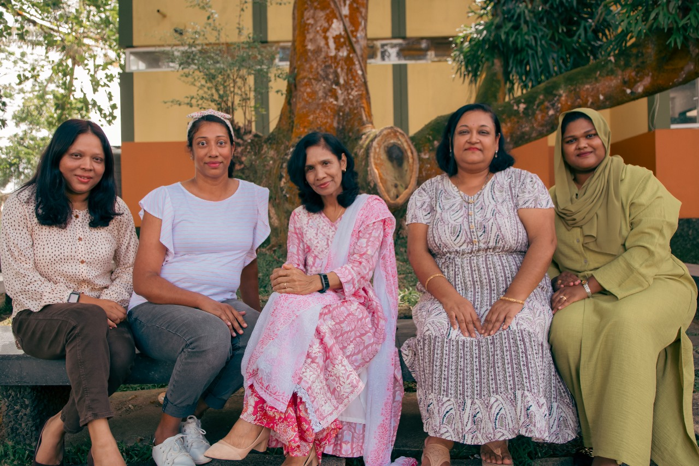
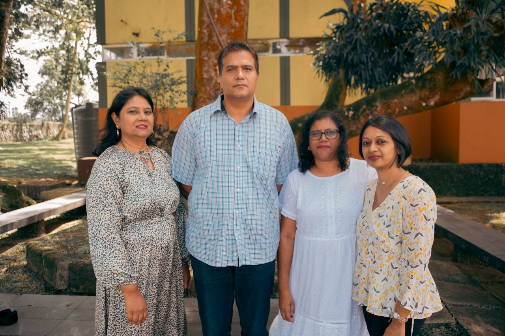
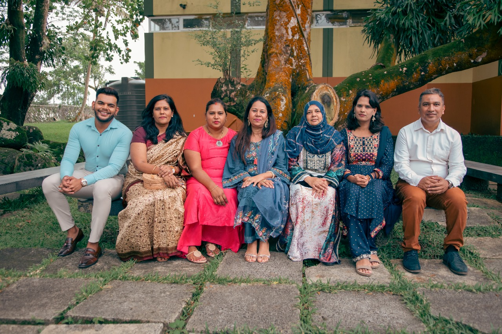
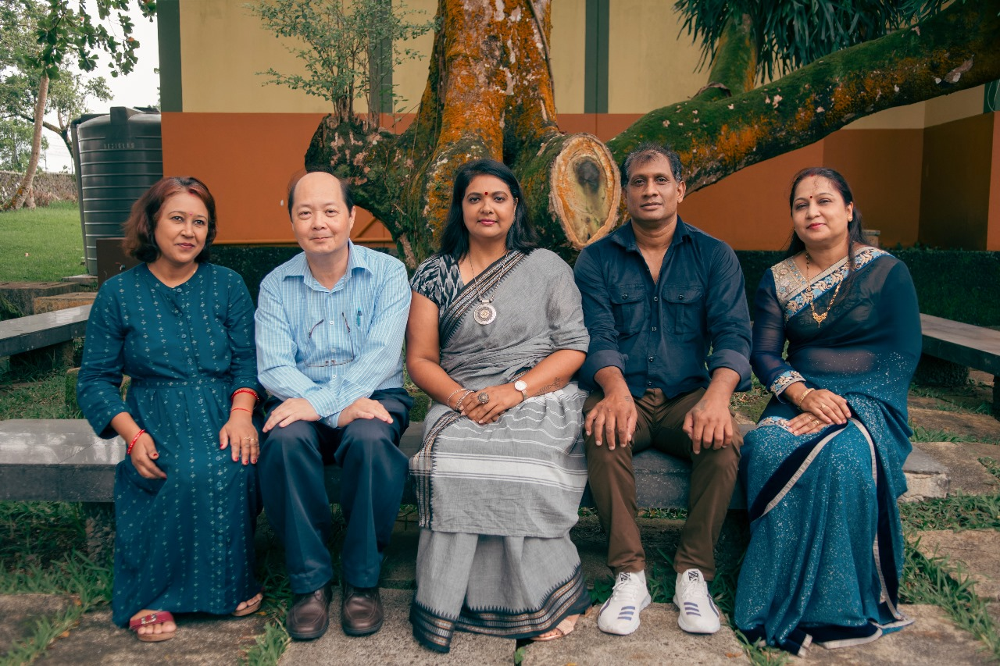
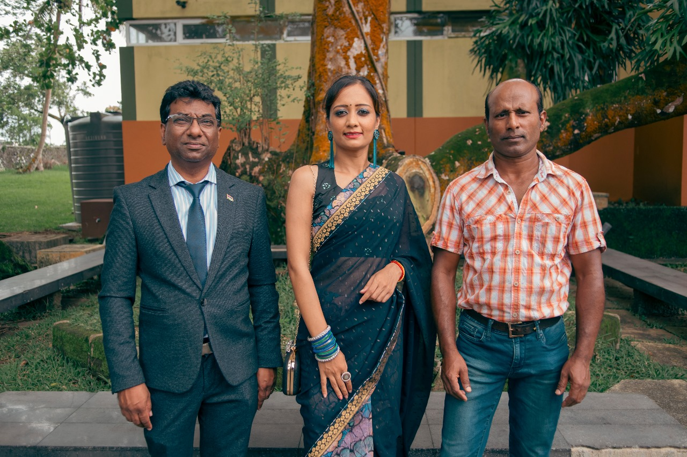
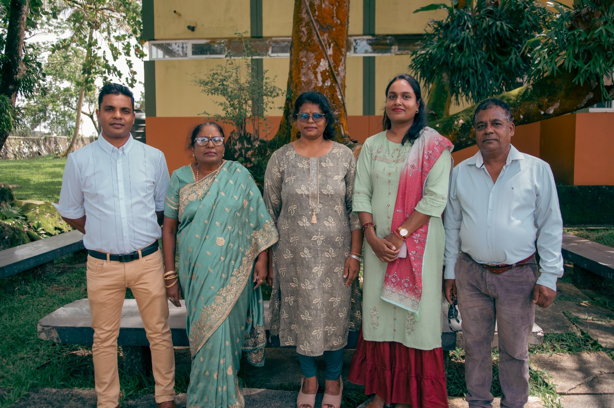
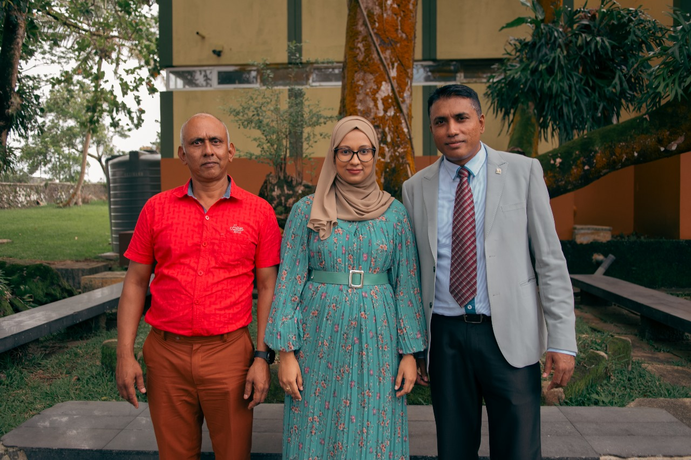
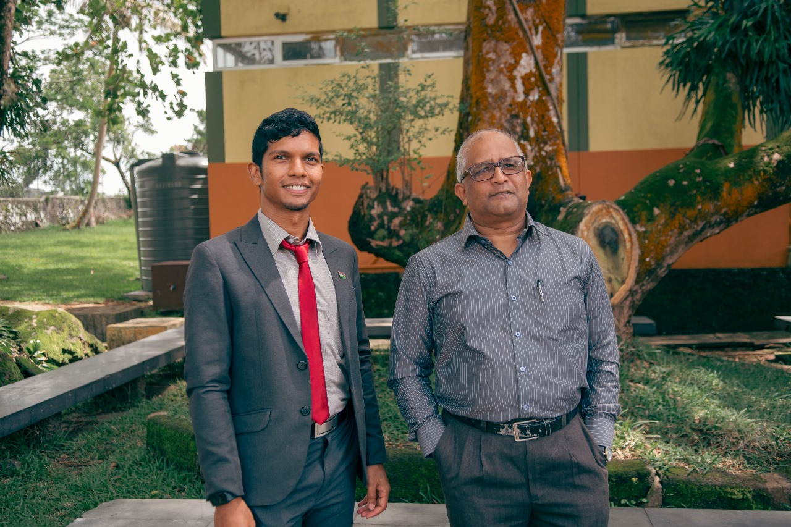

Sookdeo Bissoondoyal State College
Academic Faculties at Sookdeo Bissoondoyal Academy: Fostering Multifaceted Excellence for Tomorrow's Leaders
Sookdeo Bissoondoyal Academy's English Department: A Hub of Linguistic Excellence and Literary Exploration

Head of Department
Ms NUND BHARATEE
Team
1. Mrs Bharattee Gangaram Ramgoolam
2. Mrs Zubee Juhoor Jambocus
3. Mrs Karishma Ramdolin Rupear
4. Mr Hitanand Surjoo (part-time)
"Communication – the human connection is the key to personal and career success” - Paul J. Meyer
The department values an interdisciplinary activity-based approach which offers opportunities to explore and experience language through active involvement. Our Vision is to empower our students to become full participants in a fast-changing global environment by promoting linguistic, communication and transferable skills. Our mission is to develop in our students a sensitivity for the English language and literature by promoting language skills through a variety of traditional and innovative tools and strategies.
We, in the department are convinced that language learning is dynamic and vibrant, hence it cannot be confined to the classroom. Community service projects such as the setting up of mini libraries to promote the reading culture in rural areas, helping needy children and civic engagement towards environmental sustainability are some of the projects undertaken by our department. Active participation and commitment to a team with a shared vision ,not only helped our students develop social and collaborative skills ,but also increased their sense of social awareness and responsibility thus translating academic issues into concrete actions and lifetime experiences .A multi-disciplinary approach has also allowed us to address other challenges facing our modern youth such as depression ,isolation and anti-social behaviours – hence , making space for pastoral care and cater for our students’ wellbeing ,which remain our core values. The psychological, cognitive and emotional benefits derived by contributing positively to the community have definitely helped our students to develop a higher self-esteem, communicate with confidence and in the process, enhance academic performance as well. Public speaking, MUN, Drama, Youth Parliament, Debates and Elocutions are integral parts of the English language and EGP curriculum at SBA. Optimum use of the multi-media lab and ICT resources is made, thus making language and literature learning fun and dynamic.
Last but not the least, Educators of the English department seize this opportunity to thank the school administration, the Rector and D. Rector in particular, for their support, faith in the department, the abundant opportunities for growth and for going the extra mile for the wellbeing of our students. These have been vital contributing factors to the fulfilling of our mission and to keep us motivated, despite the various challenges facing language educators.
Sookdeo Bissoondoyal Academy's French Department: A Gateway to Francophone Cultures and Linguistic Mastery

Head of Department
Mr Rughu Leckraj
Team
1. Mr Chamilall Manish
2. Mrs Perumall Stella
3. Mrs Clarisse Joannie (part-time)
"Le français est une chance pour penser et rêver différemment.” - Anonyme
Le but du département de français de SBSC est d’encadrer et d’accompagner nos apprenants à réaliser leur potentiel linguistique en leur offrant une connaissance pluridimensionnelle du français. Un cadre pédagogique en ligne avec le programme d’études officiel oriente les méthodologies d’enseignement pour développer les compétences d’apprentissage en matière d'expression orale, d'écriture, d'écoute et de lecture.
Aussi, nous croyons à l’épanouissement de l’apprenant dans tous les domaines constituant sa personnalité. De ce fait nous intégrons des activités de culture générale, d'éloquence, et de productions filmographiques afin de permettre aux étudiants d’étendre leurs capacités fonctionnelles tout en enrichissant leurs qualités socio-culturelles.
Ainsi, notre stratégie vise à construire des aptitudes de travail autonomes aussi bien que collectif chez les apprenants du français au sein de SBSC. De surcroit, notre philosophie tient à engager nos étudiants sereinement sur la voie de la curiosité en encourageant leur pensée logique et créative par l’intermédiaire de la langue de Molière.
Pour mettre en œuvre notre mission, nous valorisons l’approche collaborative avec l’administration de l'école, la coopération interdisciplinaire entre les départements de SBSC aussi bien que les parents et des acteurs socio-éducatifs. Au sein du département, l’esprit d’équipe est à la base de notre action pour d’atteindre nos objectifs communs.
The Art and Science of Mathematics: The Sookdeo Bissoondoyal Academy Mathematics Department

Head of Department
Mrs B.A.Boodhoo
Team
1. Mrs F.Budureea
2. Mrs R.Keenoo
3. Mrs P.Pultoo
4. Mr R.Inder
5. Ms Z.Khan Jaffur
6. Mr N.Ramatally (part-time)
"Pure mathematics is, in its way, the poetry of logical ideas.” - Albert Einstein
The mathematics department comprises of 6 full-time educators and 1 part-time educator. Educators have teacher-dedicated classes for the teaching of mathematics and additional mathematics.
Mathematics at O-level, being compulsory, is done by all students of G10 and G11 and Additional Mathematics is done by a vast majority of the students of G10 and G11.
Likewise at A-level, most students opt for Mathematics at the Principal level with only a few for Subsidiary level. Mathematics being a subject of logic, helps students to grow their problem-solving and reasoning skills. It has a huge scope in every field of our life, such as medicine, engineering, finance, natural science, economics, etc. Math helps in the understanding of the world — and the world is used in the understanding of math.
Being very much aware of the importance of studying mathematics for the students, it is with much dedication that educators come to class fully prepared with clear aims and objectives of the lesson plans. Solving mathematical problems is one of the best brain exercises and young learners are taught skills to practice and to further develop. Students also apply the skills in the context of everyday situations and therefore can also use mathematics as a means of communication and for other related subjects thus enabling them to gain confidence, satisfaction and enjoyment.
The Sookdeo Bissoondoyal Academy Department of Computing: Empowering the Next Generation of Digital Innovators

Head Of Department
Mr Rajub Atish Koomar
Team
1. Mrs Chaumoo Bibi Shenaz
2. Mrs Kulloo Mangal Shraddha
"The science of today is the technology of tomorrow.” - Edward Teller
The Department of Computing at Sookdeo Bissoondoyal Academy is dedicated to fostering a deep understanding of the rapidly evolving field of computing and its applications in today's digital society. Our curriculum covers a wide range of topics, including programming, software development, database management and artificial intelligence. Through hands-on projects, interactive classroom discussions, and collaborative research opportunities, our students gain a deep understanding of the technical and creative aspects of computing, as well as the ethical and social implications of emerging technologies. Our experienced and dedicated faculty members bring their diverse expertise and research interests to the classroom, providing students with a personalized and challenging educational experience that prepares them for leadership roles in a wide range of industries, from technology and entertainment to healthcare and finance. Whether you are interested in developing the next generation of innovative software, building cutting-edge artificial intelligence systems, or creating secure and ethical computing systems, the Department of Computing at Sookdeo Bissoondoyal Academy provides a stimulating and supportive environment to realize your digital dreams.
Unveiling the Wonders of Life: The Biology Department at Sookdeo Bissoondoyal Academy

Head Of Department
Mr Chan Hyun Chong
Team
1. Mrs Maya Jeerawon
2. Mrs Avinash Gobin
"Biology is the most powerful technology ever created. DNA is software, protein are hardware, cells are factories.” - Arvind Gupta
The Biology Department at Sookdeo Bissoondoyal Academy offers an inspiring environment where students can explore the complexities of life and the natural world. Our curriculum is designed to provide a comprehensive understanding of biological principles and concepts, ranging from molecular biology and genetics to ecology and evolution. Through a combination of theoretical instruction and hands-on laboratory experiences, students develop critical thinking skills and scientific literacy, preparing them for success in higher education and careers in biology-related fields. Our dedicated team of educators is committed to fostering a passion for biological sciences, encouraging students to ask questions, conduct experiments, and engage in meaningful research projects. By emphasizing the connections between biology and other scientific disciplines, we aim to equip students with the knowledge and skills necessary to address the challenges of the 21st century, such as environmental conservation, public health, and biotechnology. Join us on a journey of discovery and innovation in the fascinating world of biology at Sookdeo Bissoondoyal Academy.
Exploring the Elements: The Chemistry Department at Sookdeo Bissoondoyal Academy

Head Of Department
Mrs. Seewoogoolam Rehana
Team
1. Mr. Narain Shantilall
2. Mrs. Goomany Anusha
"Chemistry is the study of matter and its interactions with energy and itself." - Anonymous
The Chemistry Department at Sookdeo Bissoondoyal Academy is dedicated to providing a thorough and engaging education in chemical sciences. Our curriculum encompasses fundamental topics such as organic, inorganic, physical, and analytical chemistry. We emphasize the importance of laboratory skills, critical thinking, and problem-solving abilities through hands-on experiments and research projects. Our experienced faculty members guide students through the complexities of chemical reactions, molecular structures, and the principles that govern the behavior of matter. We also highlight the relevance of chemistry in everyday life and its applications in various industries, including pharmaceuticals, environmental science, and materials science. By fostering a deep understanding of chemistry, we aim to prepare our students for success in higher education and careers in scientific research, engineering, and related fields.
The Physics Department at Sookdeo Bissoondoyal Academy: Unraveling the Mysteries of the Universe

Head Of Department
Mr. Harry Coopoosamy
Team
1. Mrs. Sunita Oree
2. Mr. Anand Kumar
"Physics is the fundamental science. It encompasses everything we see around us." - Anonymous
The Physics Department at Sookdeo Bissoondoyal Academy provides a rigorous and stimulating education in the principles of physics. Our curriculum covers a broad spectrum of topics, from classical mechanics and electromagnetism to modern physics and quantum mechanics. Through a combination of theoretical instruction and practical laboratory work, students gain a deep understanding of the laws that govern the physical world. Our dedicated faculty members bring their expertise and passion for physics to the classroom, inspiring students to explore the wonders of the universe and develop their analytical and problem-solving skills. We emphasize the importance of scientific inquiry and experimentation, encouraging students to conduct their own investigations and contribute to the advancement of knowledge in the field. Whether you are interested in pursuing a career in science, engineering, or technology, the Physics Department at Sookdeo Bissoondoyal Academy provides a solid foundation for your future endeavors.
Creativity and Expression: The Arts Department at Sookdeo Bissoondoyal Academy

Head Of Department
Mrs. Hemavati Kisten
Team
1. Mr. S. Beeharry
2. Mrs. V. Ramsamy
"Art is not what you see, but what you make others see." - Edgar Degas
The Arts Department at Sookdeo Bissoondoyal Academy is committed to nurturing the creative potential of our students through a diverse and comprehensive arts education. Our curriculum includes visual arts, music, drama, and dance, providing students with a range of opportunities to explore and express their artistic talents. Through hands-on projects, performances, and exhibitions, students develop their technical skills and creative abilities, as well as their confidence and self-expression. Our experienced faculty members bring their passion and expertise to the classroom, inspiring students to push the boundaries of their creativity and think outside the box. We emphasize the importance of the arts in personal and cultural development, encouraging students to appreciate the beauty and diversity of artistic expression. Whether you are interested in pursuing a career in the arts or simply want to explore your creative side, the Arts Department at Sookdeo Bissoondoyal Academy provides a supportive and stimulating environment to help you achieve your artistic goals.